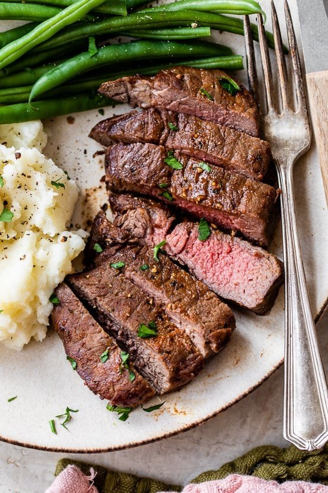

Air Fryer Steak

INGREDIENTS
- 1 teaspoon garlic powder
- 1/2 teaspoon sweet paprika
- 1 teaspoon kosher salt
- 1/4 teaspoon black pepper
- 4 sirloin steaks, 1 inch thick (1 1/2 lbs total)
- Olive oil spray
DIRECTIONS
- Combine the spices in a small bowl.
- Spray the steak with olive oil and coat both sides with the spices.
- Preheat the air fryer so the basket gets hot. For a 1-inch steak, air fry 400F 10 minutes turning halfway, for medium rare.Time may vary slightly with different air fryer models, and the thickness of the steaks.
- Finish with a pinch of more salt and black pepper
- Let it rest, tented with foil 5 minutes before slicing.